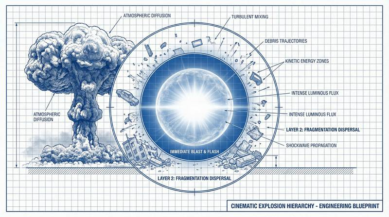
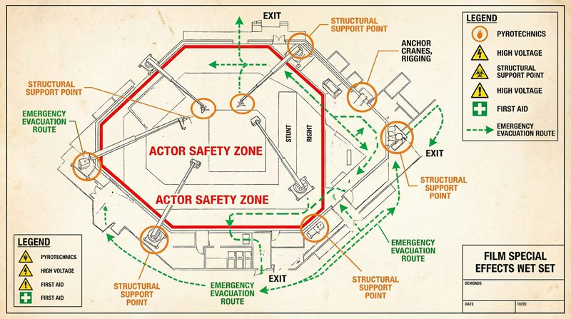

返回课程列表
第四课
动力学
爆炸冲击波与超级英雄的力量分析
⏱️ 约55分钟
爆炸的冲击波、超级英雄的一拳之力、飞车碰撞的变形——这些震撼场景都可以用动力学来量化分析。
爆炸的动力学
爆炸是化学能瞬间释放为动能和热能的过程。冲击波以超音速传播，压力随距离的立方衰减。电影中的爆炸效果往往被大幅夸张。

电影爆炸的真实物理
爆炸场景的动力学分析：
- 冲击波速度：TNT爆炸产生的冲击波初速约7000m/s，远超音速
- 压力衰减：冲击波压力与距离的立方成反比，10米外已大幅减弱
- 碎片飞散：爆炸碎片的初速可达数百m/s，是主要杀伤因素
- 英雄走开不回头：现实中爆炸冲击波会将人击倒，不可能酷酷地走开
超级英雄的力量计算
漫威和DC的超级英雄展示了超越常人的力量。用牛顿定律计算他们的力量，数字往往令人惊叹。

超级英雄的F=ma
用物理学分析超级英雄：
- 绿巨人一拳：假设将1吨重物加速到100m/s，在0.1秒内完成，力约100万牛顿
- 蜘蛛侠吐丝：承受自身体重的蛛丝需要抗拉强度超过钢铁
- 闪电侠跑步：接近光速时相对论效应显著，质量趋近无穷大
- 超人飞行：没有推进装置的飞行违反牛顿第三定律